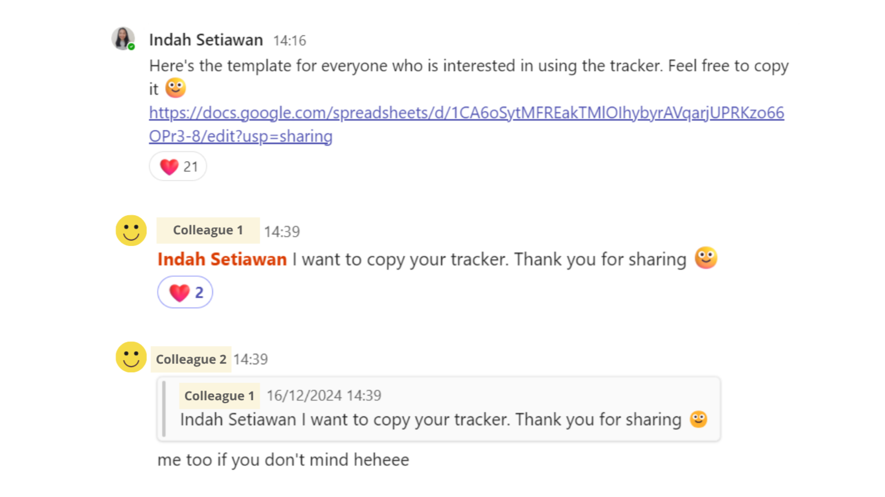

Assets shipped
700+
Courses
27
Time
18 months
In most cases, content production doesn't stall because people aren't working. It stalls because visibility is lacking. The same goes for my experience at The KPI Institute. With a growing course catalog, every module followed the same process (draft → review → revision → sign-off). However, multiple courses were often in progress at the same time and several team members may be involved. As time passed, it became hard to answer a simple question: what is currently stuck and where? Although a project management tool was available for high-level project monitoring, I often struggled to know what I needed to work on each day. So, I built one for myself.
Based on my needs at the time, I created a tracker that monitored two things for each content item and course: production stage (not started, in development, completed) and QA round (1st review, 2nd review, completed). Each item was a row and each course was a column. At a glance, it clearly showed what was where—not just "done or not done," but which feedback round it was in and who was responsible next.
| Course 1 | Course 2 | Course 3 | Course 4 | |
|---|---|---|---|---|
| Section 1 | Completed | Completed | 2nd QA | 1st QA |
| Section 2 | Completed | 2nd QA | 2nd QA | 1st QA |
| Section 3 | Completed | 2nd QA | In dev | Not started |
| Section 4 | 2nd QA | 1st QA | In dev | Not started |
Recreated structure with anonymized labels — click here to access the template.
The tracker also had a quieter benefit: it showed what share of items needed no revision after each QA round over time — a rough measure of how clean the work was and how much friction remained after the second pass.
Chart comparing round 1 and round 2 revision clean rates across four courses
Here are the first 4 courses I worked on. Looking at them side by side tells a clearer story than a single number could:
The first pass tends to clear the easy, mechanical fixes. What survives to round two is harder, more substantial problems that require more time to resolve.
One day, a colleague shared their problems with tracking course development at our weekly meeting. I took the initiative to share my tracker template. I was excited because I thought I would only use it for my own problem, but it turned out others had the same issue and could benefit from it.

For me, the tracker worked because it was simple: a tool anyone could open without a steep learning curve. However, that simplicity was also a limit. Every time someone asked for another column or status type, I had to decide if it would make the tool more useful or just more cluttered. That's why keeping it clear mattered more than making it complete. The revision-efficiency data also taught me something unexpected. A high first-pass clean rate isn't always good and a lower one isn't always bad. We need full context to understand what went wrong (or right) in training development. Reading the two numbers together shows where a development truly stands.